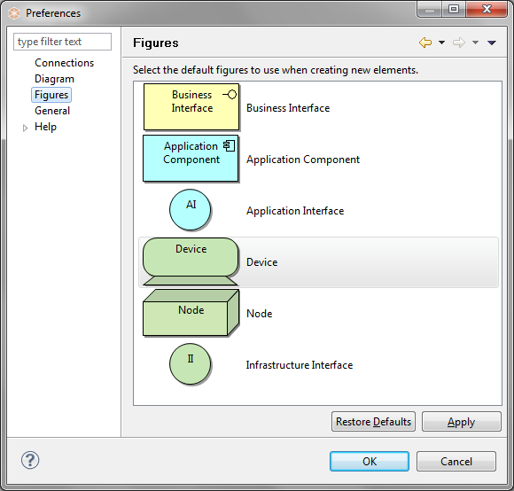

 Figures Preferences
Alternate default figures are provided for drawing certain figures in diagram Views. Double-click on a figure to set its default shape. Views will need to be closed and re-opened for this to take effect.